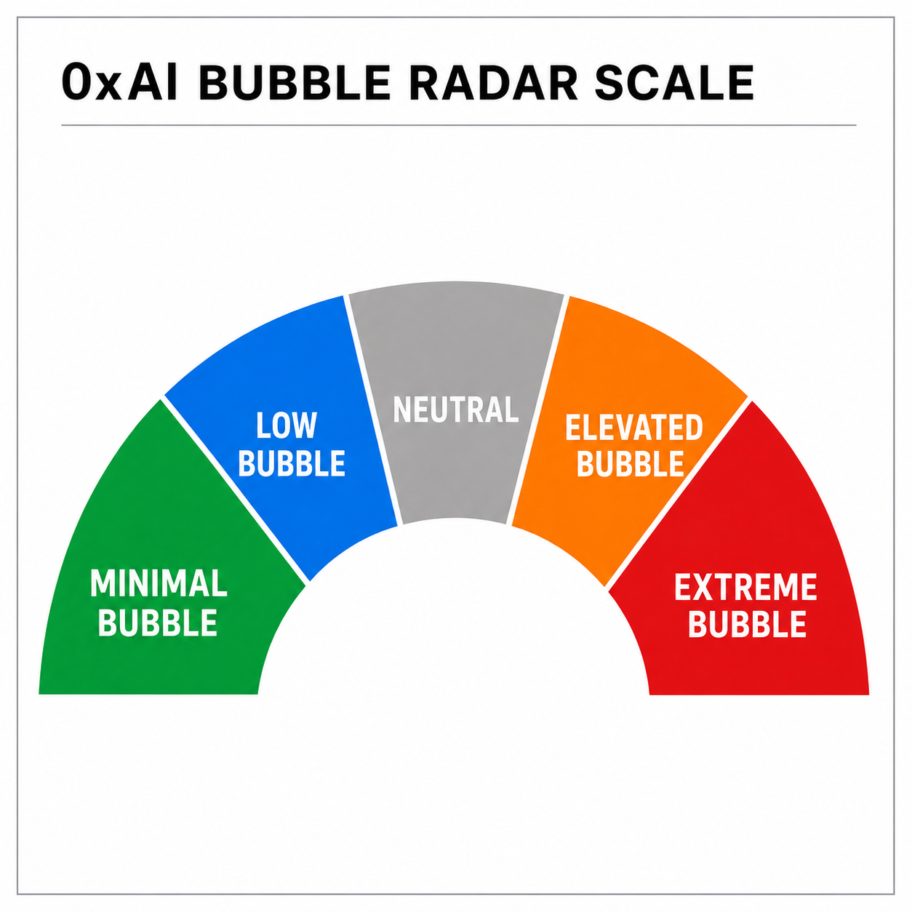

Public market signal archive
0xAI
Bubble Radar
AI-powered tracking of bubble conditions across the market's most closely watched stocks.
Powered by the proprietary 0xAI algorithm.
Latest reading
Loading the latest signal…
Methodology
How to read the radar

The radar classifies detected bubble conditions into five levels, ranging from minimal to extreme.
- Minimal BubbleVery limited bubble characteristics detected.
- Low BubbleBubble pressure remains relatively contained.
- NeutralNo clear bubble extreme detected.
- Elevated BubbleBubble pressure is becoming more pronounced.
- Extreme BubbleExceptional bubble conditions detected.
A high bubble reading does not necessarily imply an immediate price decline. The radar measures bubble conditions, not short-term market timing.
Public record
Historical readings
No readings match these filters.
0xAI Market Insights
See beyond the price.
Follow new Bubble Radar readings and deeper market context as the public record grows.
Subscribe on SubstackFor research and informational purposes only. Nothing presented here constitutes investment advice, a recommendation, or an offer to buy or sell any security.